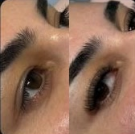
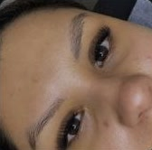
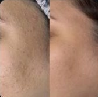
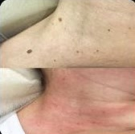
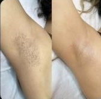

Esteticista em São João de Meriti · RJ
Pele cuidada, olhar marcante e o corpo leve.
Cílios, sobrancelhas, limpeza de pele, dermaplaning, drenagem linfática e massagens em Coelho da Rocha, com atendimento individual e hora marcada.
Coelho da Rocha, São João de Meriti · perto de Belford Roxo e Nilópolis
Serviços
Do olhar ao corpo, cada cuidado no seu tempo.
Todo atendimento começa com uma conversa sobre o que você quer e o que a sua pele precisa. Valores e pacotes pelo WhatsApp.
Olhar 2
Extensão de cílios
ConsultarFios aplicados um a um para alongar e dar volume, no estilo que combina com o seu rosto: do natural ao mais marcado.
Design de sobrancelha com henna
ConsultarDesenho pensado para o formato do seu rosto e henna para preencher falhas e definir o contorno.
Pele 4
Limpeza de pele
ConsultarHigienização profunda, extração de cravos e hidratação para uma pele mais uniforme e respirando melhor.
Dermaplaning
ConsultarEsfoliação com lâmina que remove células mortas e a penugem do rosto. A maquiagem assenta melhor e a pele fica lisa.
Revitalização facial
ConsultarProtocolo para devolver viço, hidratação e luminosidade a peles cansadas ou opacas.
Remoção de sinais
ConsultarRemoção de pequenos sinais e pintinhas superficiais da pele, sempre depois de avaliação.
Corpo 4
Tratamento de estrias
ConsultarSessões para suavizar a textura e a cor das estrias, com plano conforme o tipo e o tempo de cada uma.
Drenagem linfática
ConsultarMovimentos suaves e ritmados que ajudam a reduzir o inchaço e a retenção de líquidos.
Massagem modeladora
ConsultarManobras firmes que trabalham o contorno do corpo e ativam a circulação.
Massagem relaxante
ConsultarUma hora para soltar a tensão dos ombros, das costas e das pernas, e sair mais leve.
Como funciona
Da primeira mensagem ao resultado.
Chame no WhatsApp
Conte o que você quer tratar. A Anny responde com valores e os horários livres.
Avaliação
No primeiro encontro ela avalia a pele ou a região e indica o tratamento e o número de sessões.
Cuidado e retorno
Você recebe as orientações para casa e agenda a manutenção, quando o tratamento pede.
Resultados
Antes e depois de clientes reais.





Mais trabalhos no Instagram @annyalmeidaestetica.
“Cada pele tem a sua história. O meu trabalho é cuidar dela sem pressa.”
Sobre
Anny Almeida
Esteticista em Coelho da Rocha, São João de Meriti. Atende com hora marcada, uma cliente por vez, em cuidados de rosto, olhar e corpo.
Formação e anos de experiência: a confirmar com a Anny.
Dúvidas frequentes
O que as clientes mais perguntam.
Onde fica o espaço da Anny Almeida?
Na Rua José Geraldo Nogueira, 27, casa 1, Coelho da Rocha, São João de Meriti (RJ), CEP 25555-050. Fica perto de Belford Roxo, Nilópolis e Duque de Caxias.
Como faço para agendar?
Pelo WhatsApp (21) 97569-6358. O atendimento é só com hora marcada.
Quanto custa cada serviço?
Os valores e pacotes estão no catálogo do WhatsApp. Chame a Anny e ela envia a tabela atualizada.
Quanto tempo dura uma extensão de cílios?
Em geral, de três a quatro semanas. A manutenção costuma ser feita a cada 15 a 21 dias para manter o volume.
Dermaplaning faz o pelo crescer mais grosso?
Não. A lâmina remove só a penugem fina e as células mortas; o pelo volta com a mesma espessura.
Quantas sessões de drenagem linfática eu preciso?
Depende do objetivo. Para inchaço do dia a dia, muitas clientes sentem diferença já nas primeiras sessões; a Anny indica o número certo na avaliação.
Agende
Seu horário está a uma mensagem.
Chame no WhatsApp, conte o que você quer cuidar e escolha o melhor horário.
Coelho da Rocha, São João de Meriti · RJAbrir no Google Maps